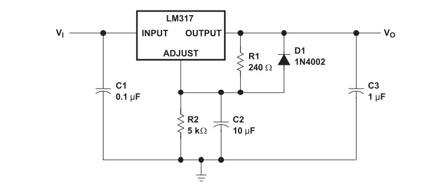
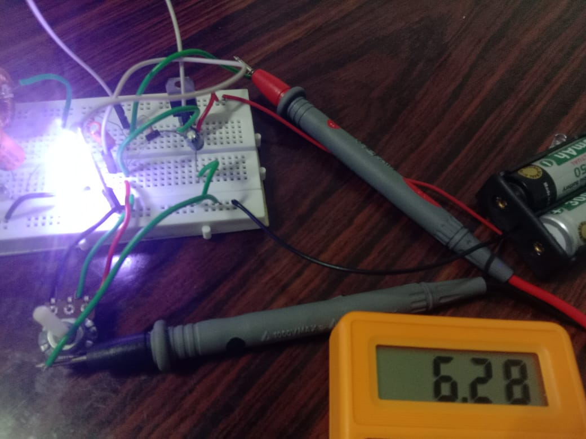

LM317 is a linear voltage regulator IC that can adjust and maintain a stable output voltage between 1.25V to
37V, provided the input voltage is higher.
It is mainly used when you need a regulated, adjustable DC output in electronic circuits.
Unlike a buck converter, LM317 is a linear device — it drops extra voltage as heat (less efficient compared to
switching converters).
Construction (Pinout) of LM317
The LM317 IC typically comes in a TO-220 package with three pins:
Adjust:To set the output voltage
Output:Regulated output voltage
Input:Input voltage(higher than output)
Basic LM317 Circuit Diagram:

LM317 Basic Voltage Regualtion Circuit
Around the LM317, we typically add:
Two resistors (R1 and R2) to set the output voltage.
Capacitors (optional but recommended) for stability (one at input and one at output).
Working of LM317
1. Input Voltage (Vin):
You apply a DC voltage (say 12V) to the input pin.
2. Voltage Setting using Resistors:
You connect two resistors and between the output, adjust, and ground.
The output voltage is given by:
Vout = 1.25V x (1 + R2/R1) + (Iadj x R2)
(Usually,Iadj is small and can be ignored.)
3. Regulation:
LM317 maintains the voltage between output and adjust pin at 1.25V.
It adjusts its internal resistance to keep the output stable even if input voltage or load changes.
4. Output Voltage (Vout):
A clean, adjustable DC voltage appears at the output pin.
Important Points:
Needs minimum dropout voltage:
Input must be at least 3V higher than output for proper regulation.
Thermal shutdown:
It has internal protection — if it overheats or draws too much current, it safely shuts down.
Efficiency:
LM317 is less efficient for large voltage drops because it wastes energy as heat.
prototype

LM317 Basic Voltage Regualtion Circuit(max.output when input is 7.4v)